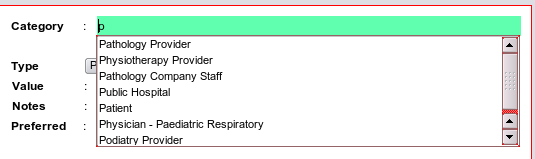

What is a category and what are they for?n. pl. categories: A specifically defined division in a system of classification or a class.
We use categories to organise information and when you enter any data in the contacts manager, one of the
obligatory fields is it's 'category'. As you will later use these categories to retrieve information you
should make every effort to be use ones that make sense.
As examples, in the patients module - all persons enterered automatically belong to the 'patients' category.
In the Organisations module, public hospitals should be allocated to a 'Public Hospital' category, and so on. A person
in the 'patient' category could be allocated to the 'Radiographer' category in the Organisations Module if they happen
to work in the local radiology firm and are also your patient.
As you type in the categories text box the following will appear: Here we have typed a single letter 'p' to
obtain the list.

Once you can see the category you want use the down arrow key on the keyboard to scroll down to the item you
want, and then hit the <enter> key. Resist all tempation to take your hands off the keyboard and use the mouse!
Some basic categories are supplied, however there are an infinite number of categories so of course you can add
your own, and they will be automatically saved for future use.
Typing in the wildcard character (%) in any textbox in EasgGP will give a complete list of results (e.g all the categories) which
could be quite large, so take care with this.
Special Category - The Provider
There is only one special category in EasyGP and it is that of a 'Provider'.
A Provider is defined as an entity - be it an organisation or a person - who supplies services to your practice.
Most of the clinical sections use this concept to retrieve
information for you .For example if you allocate your pathology companies to 'Pathology Provider', then you will have automatic access to
their details, Similarly for 'Cardiology Provider' or 'Physiotherapy Provider', and you can even make up your own categories
or providers. Then within the Requests ordering section you will be able to order tests linked to that provider type.